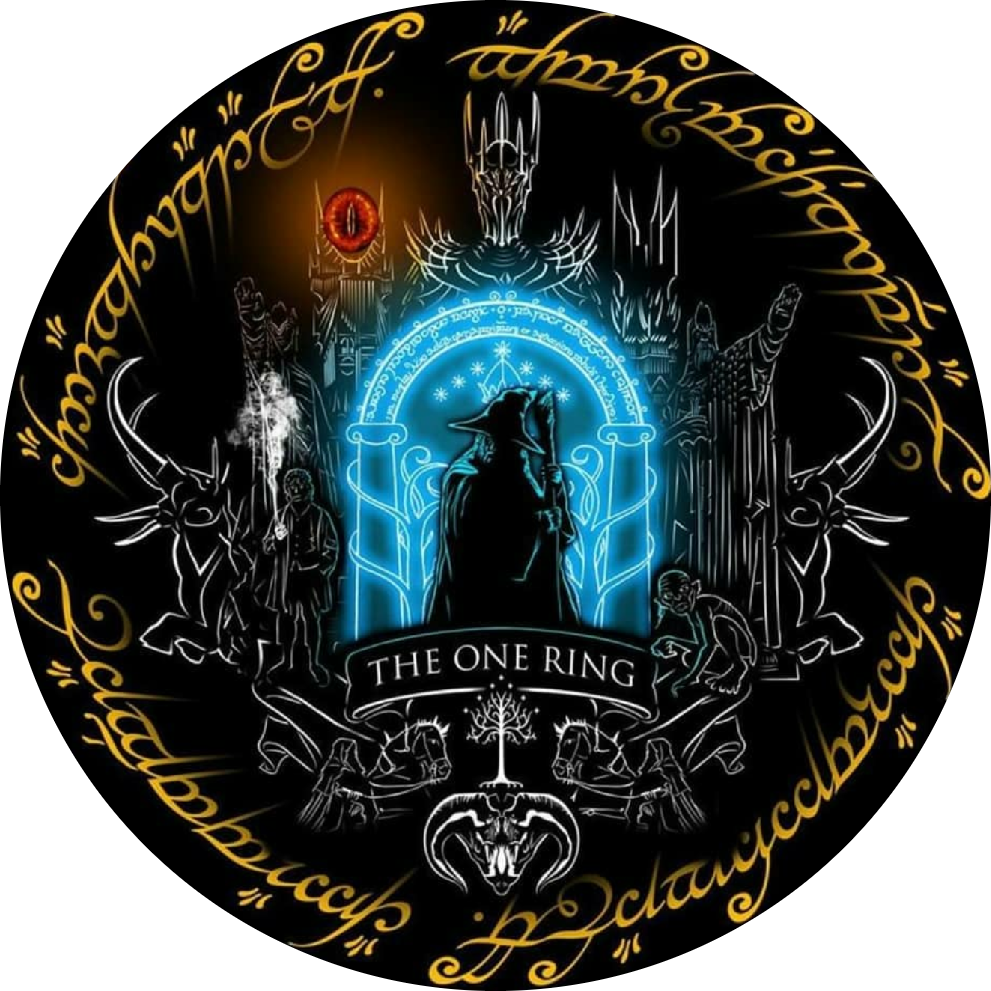

Voici le tutoriel de téléchargement du submod Royaumes d'Arda. Si vous avez un quelconque problème durant la compréhension de ce tutoriel, je vous redirige vers la vidéo d'Eönwë à propos de l'installation du submod.
Au préalable, il vous faudra déjà avoir installé BFME2 (La Bataille pour la Terre du Milieu 2) et son extension ROTWK (L'Avènement du Roi-Sorcier). En revanche, vous n'aurez pas besoin d'avoir Age Of The Ring car le submod utilise déjà sa base.
Tout d'abord, je vous invite à télécharger le dossier du jeu.
Une fois le dossier compress√© t√©l√©charg√©, vous n'avez plus qu'√† l'extraire dans un disque ou un dossier de votre ordinateur. Pour votre stockage, je vous conseille de le mettre dans un disque dur style D: si vous en poss√©dez un sur votre syst√®me parce que, bon, on parle quand m√™me d'un jeu √† environ 8 Go hein. üôÉ
Ensuite, allez sur votre BFME2 PatchSwitcher que vous trouverez à l'installation de BFME2 et réglez-le sur 1.06 afin de pouvoir lancer le submod :
(Lorsque vous souhaiterez rejouer à BFME2, vous devrez remettre en 1.09)
Puis, allez sur votre 2.02 Switcher que vous trouverez à l'installation de ROTWK et, dans la catégorie Old 2.02 Versions, réglez la version sur "2.02 v8.0.1" :
Maintenant que cela est configuré, rendons-nous dans le dossier que vous avez installé ci-dessus. Lancez l'exécutable nommé "lotrbfme2ep1.exe" :
Vous devriez avoir cet affichage dans la première ligne "Game executable" si tout est réglé correctement :
Si ce n'est pas le cas, je vous invite à le modifier comme indiqué ou alors à aller dans "Select" puis à trouver votre exécutable de ROTWK.
La deuxi√®me ligne "Mod file" ne nous importera peu ici. Int√©ressons-nous plut√¥t √† la troisi√®me ligne "Extra flags" car cette ligne vous permettra de lancer le mod que vous souhaitez. Donc, dans ce cas, Royaumes d'Arda, parce que bon le site porte bien son nom. üòÅ
Pour obtenir l'emplacement de votre dossier, vous aurez simplement à aller dans le dossier "arda" dans Royaumes d'Arda à cliquer sur la ligne au-dessus du contenu du dossier :
(Dans mon cas, le dossier se trouve dans le disque dur D:, tout dépend de l'emplacement dans lequel vous avez extrait le dossier téléchargé)
Puis il ne vous reste plus qu'à copier cette sélection dans les guillemets de la troisième ligne du launcher (du style -mod "EmplacementDuDossier") puis cliquez sur "Start Game" pour lancer le jeu.
S'il n'y a aucun problème, vous devriez avoir cet écran de chargement après les cinématiques de début :
Dès que vous êtes sur le jeu, nous vous invitons directement à changer vos options graphiques dans Options et Paramètres personnalisés afin de limiter les crashs en mode multijoueur.
Afin de lancer le jeu plus facilement à la suite de ces manipulations, je vous inviterai à retourner dans votre dossier Royaumes d'Arda puis à créer un raccourci de l'exécutable lotrbfme2ep1 sur votre bureau afin que ce soit beaucoup plus simple à la suite. Vous pourrez toujours changer l'icône du logiciel en modifiant votre raccourci, nous avons mis à disposition un fichier "arda.ico" dans le dossier arda fait spécialement pour cela.
Enfin, lorsque vous souhaiterez jouer en multijoueur, nous vous recommandons 2 logiciels gratuits que vous pourrez facilement télécharger sur votre navigateur : Hamachi ou GameRanger. Si vous souhaitez dans un cadre plus privé et plus optimisé, je vous invite à utiliser Hamachi. En revanche, si vous voulez jouer avec beaucoup de personnes vu que l'autre logiciel est assez limité, vous pouvez utiliser GameRanger à condition que le host de la partie ait une bonne connexion.
Pour GameRanger, il vous faudra d'abord créer un compte puis host une partie sur le jeu The Rise of the Witch-king (ROTWK) :
Puis dans la salle, allez dans Room, puis Options, puis Browse... et sélectionnez votre exécutable lotrbfme2ep1 dans Royaumes d'Arda.

Simple information à propos de GameRanger : le jeu sera lancé pour tout le monde lorsque l'hôte l'aura lancé.
Enfin, pour Hamachi, vous devrez vous créer un compte puis soit créer un réseau pour accueillir d'autres joueurs soit rejoindre le réseau d'un autre joueur.
Si vous créez un réseau, vous devrez donner le nom et le mot de passe aux autres joueurs et sinon, vous devrez rentrer le nom et le mot de passe d'un réseau privé pour vous y connecter. Dans ce cas-là, vous pouvez lancer le jeu indépendamment des autres joueurs. Une autre différence avec GameRanger est qu'un réseau Hamachi ne se supprime pas comparé à une room GameRanger.
⚠ En cas de problème dans l'installation, n'hésitez pas à vous rendre sur le serveur Discord Royaumes d'Arda, nous essaierons d'être présents le plus rapidement possible pour vous aider. ⚠
Merci d'avoir lu et bon jeu √† vous ! üòÑ